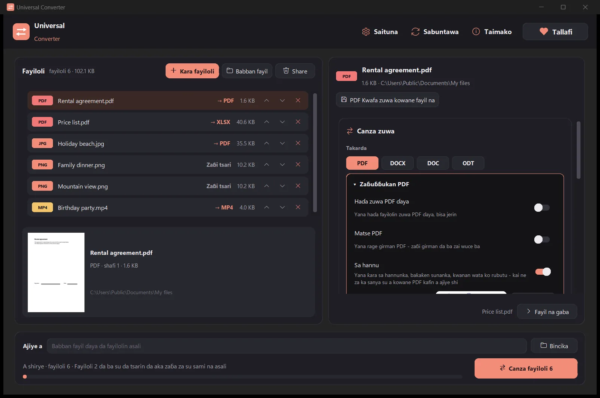

Cike fom na PDF
Yana aiki da fom na PDF da ake iya cikawa da kuma PDF na yau da kullum: danna filin fom don rubutu a ciki, ko ƙara rubutu, alamomin daidai, alamomin kuskure da kwanan wata ko'ina a shafin. Ana ajiye fom ɗin da aka cike a matsayin PDF da aka gama wanda yake kama ɗaya ko'ina.
Yadda ake shigarwa da sabuntawa
- Buɗe .dmg da ka sauke kuma ka ja Universal Converter zuwa Applications.
- Buɗe manhajar. A karon farko macOS zai toshe ta saboda Apple bai sa mata hannu ba: danna Done.
- Buɗe System Settings > Privacy & Security, gungura ƙasa, danna Open Anyway kuma ka shigar da kalmar sirrinka. Sau ɗaya kawai za ka yi haka.
Sabuntawa: idan ka ba da izini lokacin da manhajar ta fara buɗewa, tana duba sababbin siga duk lokacin da ta fara, tana tabbatar da sa hannunsu na dijital kuma tana shigar da su lokacin da ka zaɓa.
Yadda ake shigarwa da sabuntawa
- Danna “Sauke don Android” a wayarka.
- Buɗe fayil ɗin da aka sauke. Idan Android ta tambaya, ba wa burauzarka ko mai sarrafa fayil izinin shigar da manhajoji.
- Danna Install.
Sabuntawa: manhajar tana dubawa kusan sau ɗaya a rana kuma tana gaya maka idan sabuwar siga ta shirya. Sauke ta haka nan kuma ka shigar da ita a kan tsohuwar; ana kiyaye saitunanka.
Yadda ake yi
- Buɗe Universal Converter kuma ka zaɓi Sa hannu a hagu.
- Ja fayilolinka ko dukan babban fayil cikin taga, ko danna “Ƙara fayiloli”.
- Danna Buɗe shafin, sannan danna filayen fom don cike su, ko zaɓi Rubutu, Kwanan wata ko alamar daidai ka danna shafin.
- Danna An gama, sannan maɓallin sa hannu. Ana ajiye kwafin da aka cike a matsayin suna_signed.pdf; na asali yana nan yadda yake.

Me yasa ba tare da intanet ba?
Universal Converter yana yin aikin a na'urarka. Fayilolinka suna nan a ɓoye, manyan fayiloli ba matsala ba ne, kuma yana aiki ba tare da intanet ba.
Ƙarin abubuwan da zai iya yi
- Canza PDF zuwa Word
- Canza takardun Word zuwa PDF
- Haɗa fayiloli da yawa zuwa PDF ɗaya
- Matse PDF zuwa girman da ka zaɓa
- Matse PDF zuwa 100 KB, 200 KB ko kowane girma da fom na kan layi ke buƙata
- Canza shafukan PDF zuwa hotunan JPG
- Mayar da takardar da aka duba zuwa fayil ɗin Word da za a iya gyarawa
- Canza hotuna tsakanin JPG, PNG, WEBP da ƙari
- Canza girman hotuna ko rage su zuwa girman fayil
- Canza girman hoto ko sa hannu zuwa 20 KB, 50 KB ko ainihin pixel
- Haɗa hotuna zuwa PDF ɗaya
- JPG zuwa PDF ƙasa da 100 KB
- Kwafi rubutu daga hoto (OCR)
- Matse bidiyo ba tare da loda shi ba
- Canza bidiyo tsakanin MP4, MKV, WebM, MOV da AVI
- Ajiye sautin bidiyo a matsayin MP3
- Yi GIF daga bidiyo
- Fitar da teburi daga PDF zuwa Excel
- Canza PDF na bayanan banki zuwa Excel
- Fitar da teburi daga takardun kuɗi na PDF zuwa Excel
- Sa hannu a kan PDF